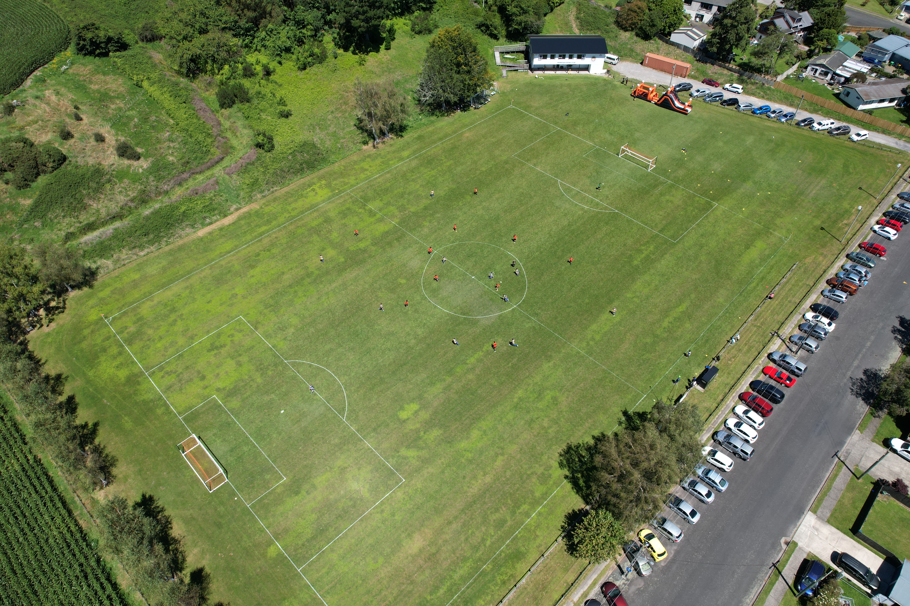

202660 Years of Ngongotahā AFC
Ngongotahā AFC is celebrating its 60th year jubilee in 2026, and what a 60 years it has been.
Founded in 1966, the club has grown from its early days into one of Rotorua's longstanding football institutions. Across six decades, Ngongotahā has been part of generations of local players' football journeys, from young children taking their first touches through to senior football.
The club's history includes a long spell in the Northern League from 1978 to 1994, with Ngongotahā reaching as high as the second division. The club also celebrated a Northern League Division Four South championship in 1983.
More recent milestones include the 2011 Waikato-Bay of Plenty Federation Championship, promotion to the Premiership, a Chatham Cup run to the round of 16 in 2014, and an unbeaten Federation Premiership title-winning campaign in 2016.
Today, the club continues to build a pathway from Little Dribblers and junior football through to women's and senior teams. The 60th year is a chance to celebrate the people, families, players, coaches, volunteers and supporters who have helped shape the club over six decades, while looking ahead to the next generation.